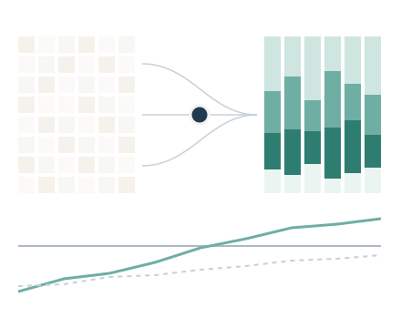

Gut Microbiota Dynamics During Extreme Altitude Climbing: A Longitudinal Case Report
Dinámica del microbioma intestinal durante cuatro semanas de exposición a gran altitud: pérdida de diversidad y aumento transitorio de taxones oportunistas.
Estudiamos el holobionte humano: el genoma de cada persona y su microbioma, como un único sistema. Analizamos cómo responde al bioexposoma, el conjunto de exposiciones que recibimos a lo largo de la vida: alimentación, actividad física, descanso, ritmos circadianos y entorno.
Con ese conocimiento impulsamos estilos de vida saludables, adaptados a cada persona, y un envejecimiento saludable. Lo llevamos a la práctica con formación universitaria, análisis genéticos y de microbioma interpretados y proyectos de I+D con empresas e instituciones.
Del dato ómico a la decisión aplicada

Microcredenciales de la EHU para interpretar análisis genéticos y de microbioma con criterio científico y aplicarlos en la práctica profesional.
Ver microcredenciales →Análisis del microbioma intestinal y análisis genéticos, con informes individualizados.
Ver análisis →Proyectos con empresas de base tecnológica y consorcios en convocatorias competitivas: diseño de estudios, secuenciación, bioinformática y validación de productos en salud, alimentación y deporte.
Pedir presupuesto →Cada persona responde de forma distinta a la alimentación, al ejercicio y al descanso. Parte de esas diferencias está en sus genes y en los microorganismos de su intestino. Nuestros análisis aportan esa información individual y la convierten en herramientas concretas para que los profesionales de la salud, la nutrición, la actividad física y el deporte ajusten sus recomendaciones a cada persona.
El análisis del microbioma y de algunos rasgos genéticos indica qué alimentos, prebióticos, probióticos o postbióticos pueden ser más útiles para cada persona. El profesional dispone así de una base objetiva para individualizar la pauta y, con un nuevo análisis, de una forma de comprobar si ha funcionado.
La genética ayuda a entender cómo tiende a responder cada persona a cada tipo de entrenamiento. El microbioma refleja cómo le afectan el esfuerzo, el descanso y la alimentación. Con esa información, el profesional puede ajustar el ejercicio, la nutrición y la recuperación de cada persona, tanto si busca salud como rendimiento.
Diseñamos y analizamos estudios de intervención para validar alimentos, probióticos, suplementos y programas de ejercicio. Buscamos marcadores genéticos y de microbioma que distingan a las personas que responden de las que no. Es la base para desarrollar productos y servicios personalizados con respaldo científico.
Nutrición de precisión · Actividad física de precisión · Descanso y ritmos circadianos
Aplicación en biomedicina de precisión, salud y deporte.
Hologenomiks pertenece al Departamento de Genética, Antropología Física y Fisiología Animal de la Facultad de Ciencia y Tecnología de la EHU, en el campus de Leioa.
La formación se imparte como microcredenciales oficiales de la universidad y los servicios se contratan a través de su Oficina de Transferencia de Resultados de Investigación (OTRI).

Euskal Herriko Unibertsitatea / Universidad del País Vasco
Facultad de Ciencia y Tecnología · Leioa (Bizkaia)

Profesor Agregado de Genética en la EHU. Investiga la interacción entre la genética del hospedador y el microbioma y su aplicación en nutrición, actividad física y prevención. Autor de 75 artículos científicos, inventor de 7 patentes y editor de dos volúmenes de Advances in Genetics (Elsevier).
Conocer el grupo →Dinámica del microbioma intestinal durante cuatro semanas de exposición a gran altitud: pérdida de diversidad y aumento transitorio de taxones oportunistas.
Análisis de datos funcionales para caracterizar perfiles individuales de recuperación tras un esfuerzo máximo.
Revisión del eje tiroides-microbioma-mitocondria en la regulación alostática de la respuesta al ejercicio.